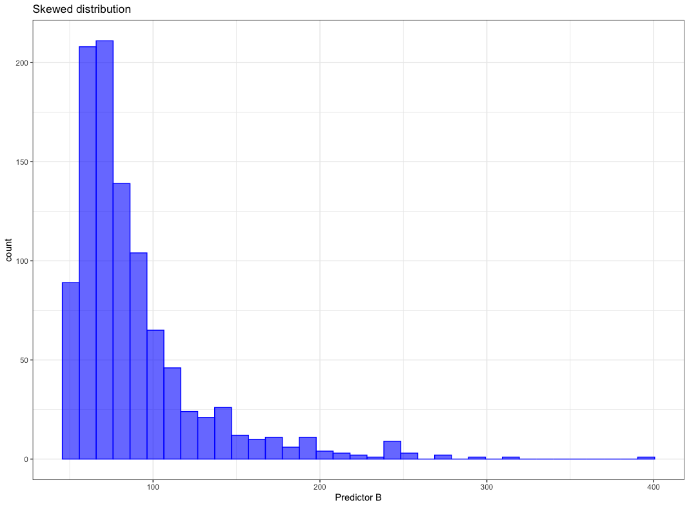
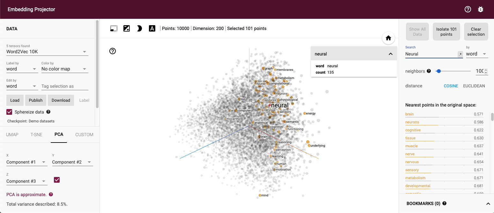
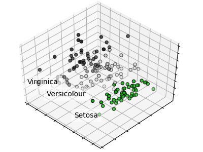
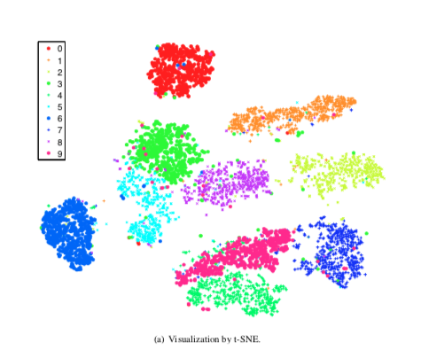
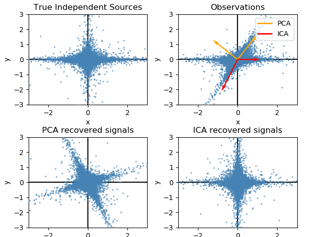
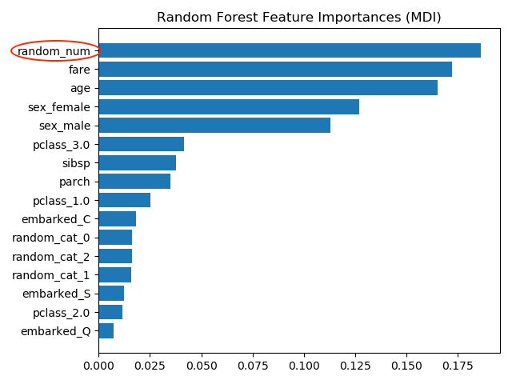
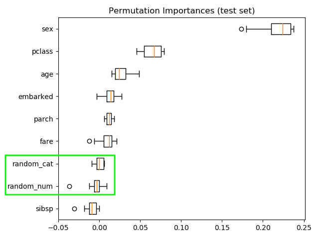
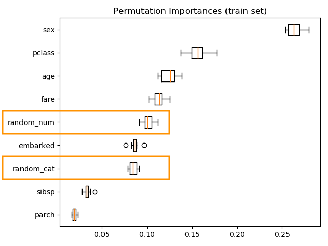
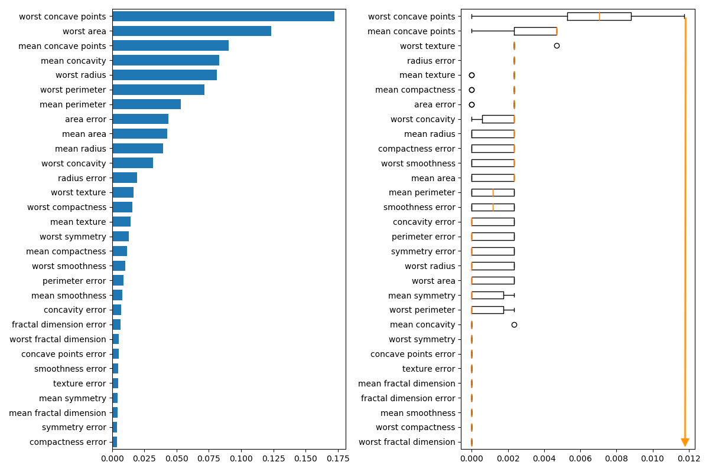
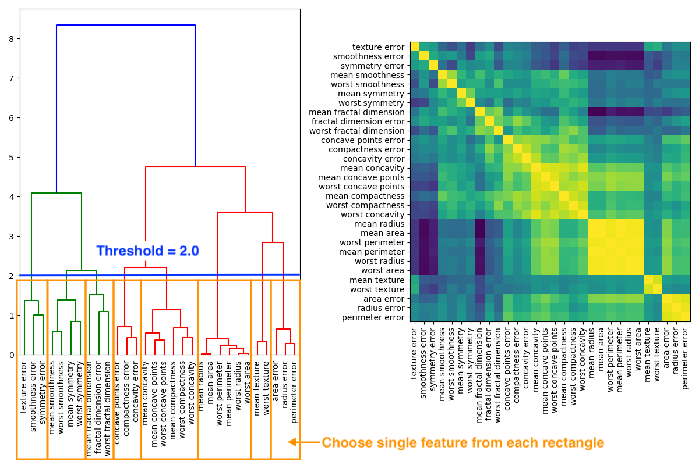

5.4 Feature engineering
Sometimes even the best models have less than useful predictive performance. This could be because key relationships are not directly available.
Key relationships that are not directly available:
- Transformation of a predictor
- Interaction of two or more predictors such as a product or ratio
- Functional relationship among predictors
- Equivalent re-representation of a predictor
Feature engineering can be defined as:
Adjusting and reworking the predictors to enable models to better uncover predictor-response relationships has been termed feature engineering.
(Kuhn and Johnson 2018)
Since there are different faculties which work on machine learning (staticians, computer scientists, neurologists) there are different terms for the same thing, so variables that go into model are called:
Predictors
- Features
- Independent variables
Quantity being modeled called:
Prediction
- Outcome
- Response
- Dependent variable
So machine learning is nothing more spectacular than finding a function that maps the input, features, to the output, response as close as possible.
\[outcome = f(features) = f(X_1, X_2, \dots, Xp) = f(X)\]
\[\hat{Y} = \hat{f}(X)\]
5.4.1 Encoding Categorical Predictors
Categorical features are not quantitative nature but qualitative data, i.e. discrete values in an ordered relationship For numerical features it is straight forward to feed them into a model, but how can categorical data be handled?
Categorical features:
- Gender
- Breeds of dogs
- Postal code
Ordered categorical features have a clear progression of values
Ordered categorical features:
- Bad
- Good
- Better
Ordered and unordered features might be handled differently to include the embedded information into a model.
Not all models need a special treatment for categorical data
Models that can deal with categorical features:
- Tree based models
- Naive Bayes models
one hot vs dummy variable
TBC
add - bert - word2vec - one hot encoding - dummy variable
This are ways how to modify qualitative features For continuous, real number values exists other tools for converting them into features that can be better utilized by a model.
5.4.2 Engineering numeric features
Features with continuous, real number values might need some pre-processing before being useful for a model. The pre-processing can be model dependent
Model dependent pre-processing:
- Skewed distribution
- No problem for:
- Trees (based on rank rather than values)
- Problem for:
- K-nearest neighbors
- SVM
- Neural networks
- No problem for:
- Correlated features
- No problem for:
- Partial least square
- Problem for:
- Neural networks
- Multiple linear regression
- No problem for:
Commonly occurring issues for numerical features and the counter measures are treated in this chapter
Commonly occurring issues:
- Vastly different scales
- Skewed distribution
- Small number of extreme values
- Values clipped at on the low/or high end of range
- Complex relationship with response
- Redundant information
Those problems are addressed by various methods in the next chapters
Remedies to commonly occurring issues:
5.4.2.1 1:1 Transformations
There are plenty of methods to transform a feature, first focus is on distribution shaping
Box-Cox transformation
Apply the Box-Cox transformation the skewed distribution below
Figure from (Kuhn and Johnson 2018)
can be shaped by Box-Cox transformation to be almost normally distributed as shown below.
Figure from (Kuhn and Johnson 2018)
Box-Cox transformation maps the original data by the following equation
Box-Cox transformation equation:
\[x^{*}=\left\{\begin{array}{ll}{\frac{x^{\lambda}-1}{\lambda \bar{x}^{\lambda-1}},} & {\lambda \neq 0} \\ {\tilde{x} \log x,} & {\lambda=0}\end{array}\right.\]
where
\(\tilde{x}\) is geometric mean \(\bar{x}=\sqrt[n]{\prod_{i=1}^{n} x_{i}}=\sqrt[n]{x_{1} \cdot x_{2} \cdots x_{n}}\)
\(\lambda\) is estimated from the data, there are a few special cases
Special cases for \(\lambda\):
- \(\lambda\) = 1 \(\implies\) no transformation
- \(\lambda\) = 0.5 \(\implies\) square root transformation
- \(\lambda\) = -1 \(\implies\) inverse transformation
5.4.2.2 1:Many Transformations
A single numeric feature can be expanded to many features to improve model performance.
The cubic expansion can be written as:
\[f(x)=\sum_{i=1}^{3} \beta_{i} f_{i}(x)=\beta_{1} x+\beta_{2} x^{2}+\beta_{3} x^{3}\]
The \(\beta\) values can be calculated using linear regression. If the true trend were linear the second and third regression parameter would be close to zero.
For example the AMES sale price vs lot area as given below is clearly not linear.
Figure from (Kuhn and Johnson 2018)
Considering a spline with 6 regions. Functions of x are shown in figure “(a)” below. Figure “(b)” shows the spline

Figure from (Kuhn and Johnson 2018)
One feature was replaced by 6 hopefully more meaningful features for the model
5.4.2.3 Many:Many Transformations
Many to many transformation can solve a variety of issues
Many to many transformations help to:
- Deal with
- outliers
- collinearity (high correlation)
- Reduce dimensionality
Contrary to intuition more features are not always beneficial
Considering irrelevant features leads to:
- Increasing computational effort for model training
- Decrease predictive performance
- Complicating predictor importance calculation
There are several dimension reduction algorithms
Dimension reduction algorithms:
- Unsupervised
- principle component analysis (PCA)
- t-SNE
- independent component analysis (ICA)
- non-negative matrix factorization (NNMF)
- autoencoders
- Supervised
- partial least squares (PLS)
- reduced predictor space is optimally associated with the response
The embedding projector of TensorFlow at http://projector.tensorflow.org gives great insight into PCA and t-SNE Below a PCA of the Word2Vec 200 dimensional space onto three dimensions, the word “neural” and points close by are marked.
 A few more details on some of the above mentioned algorithms
Principle component analysis (PCA)
Principle component analysis (PCA):
- Linear orthogonal transformation
- Possibly correlated variables
- Into set of uncorrelated variables
- principle components
PCA maps a higher dimensional space to a lower dimensional space by linear orthogonal transformations. The orthogonality results from the condition that principle components are not correlated. Each principle component explains as much variance as possible. The principle components are weighted combinations of the independent variables. More on PCA can be found at Wikipedia https://en.wikipedia.org/wiki/Principal_component_analysis
A PCA of the irsis data set is given at https://scikit-learn.org/stable/auto_examples/decomposition/plot_pca_iris.html#sphx-glr-auto-examples-decomposition-plot-pca-iris-py, it creates the graph below.
A minimal PCA Python example is given below, source https://scikit-learn.org/stable/modules/generated/sklearn.decomposition.PCA.html
>>> import numpy as np
>>> from sklearn.decomposition import IncrementalPCA
>>> X = np.array([[-1, -1], [-2, -1], [-3, -2], [1, 1], [2, 1], [3, 2]])
>>> print(X)
array([[-1.38340578, -0.2935787 ],
[-2.22189802, 0.25133484],
[-3.6053038 , -0.04224385],
[ 1.38340578, 0.2935787 ],
[ 2.22189802, -0.25133484],
[ 3.6053038 , 0.04224385]])
>>> ipca = IncrementalPCA(n_components=2, batch_size=3)
>>> ipca.fit(X)
IncrementalPCA(batch_size=3, n_components=2)
>>> ipca.transform(X)
[[-1 -1]
[-2 -1]
[-3 -2]
[ 1 1]
[ 2 1]
[ 3 2]]t-distributed stochastic neighbor embedding (t-SNE)
The next algorithm is t-distributed stochastic neighbor embedding t-SNE which focuses more on the distance of samples than on variance. The main concept is that samples which are nearby in high dimensional space are also nearby in the lower dimensional space.
t-SNE:
- t-distributed stochastic neighbor embedding
- Nonlinear dimensionality reduction
- Similar object modeled by nearby points
The t-SNE algorithm has important hyperparameter which need to be set with some insight. More on those hyperparameter and their settings can be found at https://distill.pub/2016/misread-tsne/ and in Laurens van der Maaten’s original paper on t-SNE (Maaten and Hinton 2008)
Independent component analysis (ICA)
ICA is used in signal processing to differentiate different sources of signal, i.e. suppress in an audio signal the background noise which can be very helpful when using a phone in an loud environment.
Independent component analysis (ICA):
- Origin in signal processing
- Separating mulivariate signal into additive subcomponents
The ability to separate signal sources can be seen in the following example. Whereas PCA picks up the variance ICA assigns signals to the sources.

The code is from at https://scikit-learn.org/stable/auto_examples/decomposition/plot_ica_vs_pca.html#sphx-glr-auto-examples-decomposition-plot-ica-vs-pca-py
"""
==========================
FastICA on 2D point clouds
==========================
This example illustrates visually in the feature space a comparison by
results using two different component analysis techniques.
:ref:`ICA` vs :ref:`PCA`.
Representing ICA in the feature space gives the view of 'geometric ICA':
ICA is an algorithm that finds directions in the feature space
corresponding to projections with high non-Gaussianity. These directions
need not be orthogonal in the original feature space, but they are
orthogonal in the whitened feature space, in which all directions
correspond to the same variance.
PCA, on the other hand, finds orthogonal directions in the raw feature
space that correspond to directions accounting for maximum variance.
Here we simulate independent sources using a highly non-Gaussian
process, 2 student T with a low number of degrees of freedom (top left
figure). We mix them to create observations (top right figure).
In this raw observation space, directions identified by PCA are
represented by orange vectors. We represent the signal in the PCA space,
after whitening by the variance corresponding to the PCA vectors (lower
left). Running ICA corresponds to finding a rotation in this space to
identify the directions of largest non-Gaussianity (lower right).
"""
print(__doc__)
# Authors: Alexandre Gramfort, Gael Varoquaux
# License: BSD 3 clause
import numpy as np
import matplotlib.pyplot as plt
from sklearn.decomposition import PCA, FastICA
# #############################################################################
# Generate sample data
rng = np.random.RandomState(42)
S = rng.standard_t(1.5, size=(20000, 2))
S[:, 0] *= 2.
# Mix data
A = np.array([[1, 1], [0, 2]]) # Mixing matrix
X = np.dot(S, A.T) # Generate observations
pca = PCA()
S_pca_ = pca.fit(X).transform(X)
ica = FastICA(random_state=rng)
S_ica_ = ica.fit(X).transform(X) # Estimate the sources
S_ica_ /= S_ica_.std(axis=0)
# #############################################################################
# Plot results
def plot_samples(S, axis_list=None):
plt.scatter(S[:, 0], S[:, 1], s=2, marker='o', zorder=10,
color='steelblue', alpha=0.5)
if axis_list is not None:
colors = ['orange', 'red']
for color, axis in zip(colors, axis_list):
axis /= axis.std()
x_axis, y_axis = axis
# Trick to get legend to work
plt.plot(0.1 * x_axis, 0.1 * y_axis, linewidth=2, color=color)
plt.quiver(0, 0, x_axis, y_axis, zorder=11, width=0.01, scale=6,
color=color)
plt.hlines(0, -3, 3)
plt.vlines(0, -3, 3)
plt.xlim(-3, 3)
plt.ylim(-3, 3)
plt.xlabel('x')
plt.ylabel('y')
plt.figure()
plt.subplot(2, 2, 1)
plot_samples(S / S.std())
plt.title('True Independent Sources')
axis_list = [pca.components_.T, ica.mixing_]
plt.subplot(2, 2, 2)
plot_samples(X / np.std(X), axis_list=axis_list)
legend = plt.legend(['PCA', 'ICA'], loc='upper right')
legend.set_zorder(100)
plt.title('Observations')
plt.subplot(2, 2, 3)
plot_samples(S_pca_ / np.std(S_pca_, axis=0))
plt.title('PCA recovered signals')
plt.subplot(2, 2, 4)
plot_samples(S_ica_ / np.std(S_ica_))
plt.title('ICA recovered signals')
plt.subplots_adjust(0.09, 0.04, 0.94, 0.94, 0.26, 0.36)
plt.show()
Autoencoders
Autoencoders learn a latent representation of data by feeding them through a neural network with a bottleneck, i.e. a layer with less width than the input layer. Training an autoencoder is unsupervised since the training task is to create an output as similar to the input as possible.
Further explanation is given in an example implemented in Keras at https://towardsdatascience.com/autoencoders-made-simple-6f59e2ab37ef
Autoencoders:
- Type of neural network
- Feeds information through bottleneck
- Input and output shall be as similar as possible
- Representation at bottleneck is dimensionality reduced

Figure from Michela Massi - Own work, CC BY-SA 4.0, Link (Kuhn and Johnson 2018)
5.4.3 Feature importance
After creating features the next step is to find out which features are helpful for the model. First, two methods are compared
Feature importance analysis methods:
- Permutation Importance
- permute one feature
- calculate the change in prediction performance
- the bigger the drop in prediction performance \(\implies\) more important feature
- Random Forest Feature Importance
- during training compute decrease of impurity
- average for decrease for all features
- ranking according to decrease \(\implies\) ranking of feature importance
An example shows strength and weakness of the algorithms. The example “Permutation Importance vs Random Forest Feature Importance” can be found at the Scikit-Learn (Pedregosa et al. 2011) site https://scikit-learn.org/stable/auto_examples/inspection/plot_permutation_importance.html
Comparing test and training accuracy give an indication that the model might have overfitted
Model might be overfitted:
RF train accuracy: 1.000
RF test accuracy: 0.817

The most important feature is random_num which is totally random numeric feature which the model has used to memorize the training data set but is useless to predict anything. The wrong importance measure results from two causes
Causes of wrong feature importance:
- impurity-based importances are biased towards high cardinality features
- impurity-based importances
- computed on training set statistics
- do not reflect the ability of feature to be useful to make predictions that generalize to the test set
Permutation importance
Computing the permutation importance no a held out test data shows that the low cardinality categorical feature *sex has highest importance.

Permutation importance:
- Most important feature: sex
- Random features low importance
Computing the permutation importance on the training data shows that the random features get significantly higher importance ranking than when computed on the test set.

Permutation Importance with Multicollinear or Correlated Features
Another example investigates the problem of multicollinear or correlated features. The example “Permutation Importance with Multicollinear or Correlated Features” can be found at the Scikit-Learn (Pedregosa et al. 2011) site https://scikit-learn.org/stable/auto_examples/inspection/plot_permutation_importance_multicollinear.html
Facts of example:
- Wisconsin breast cancer datase
- RandomForestClassifier 97% accuracy on a test data set
- Contains multicollinear features
The permutation importance plot shows that permuting a feature drops the accuracy by at most 0.012, which suggests taht none of the features are important.

Permutation importance:
- highest drop = 0.012 \(\implies\) no feature is important
- when features collinear
- permuting one feature will have little effect
- how to handle collinear features
- performing hierarchical clustering on the Spearman rank-order correlations19
- pick threshold
- in graph below = 2.0
- keep single feature from each cluster
- in graph below 8 cluster \(\implies\) 8 features

If threshold 1.0 is chosen than accuracy stays at 0.97 with 14 features instead of 30
References
Kuhn, Max, and Kjell Johnson. 2018. “Feature Engineering and Selection: A Practical Approach for Predictive Models.” http://www.feat.engineering/index.html.
Maaten, L. J. P. van der, and G. E. Hinton. 2008. “Visualizing High-Dimensional Data Using T-Sne.”
Pedregosa, F., G. Varoquaux, A. Gramfort, V. Michel, B. Thirion, O. Grisel, M. Blondel, et al. 2011. “Scikit-Learn: Machine Learning in Python.” Journal of Machine Learning Research 12: 2825–30.
The Spearman rank-order correlation coefficient (Spearman’s correlation, for short) is a nonparametric measure of the strength and direction of association that exists between two variables measured on at least an ordinal scale.↩︎